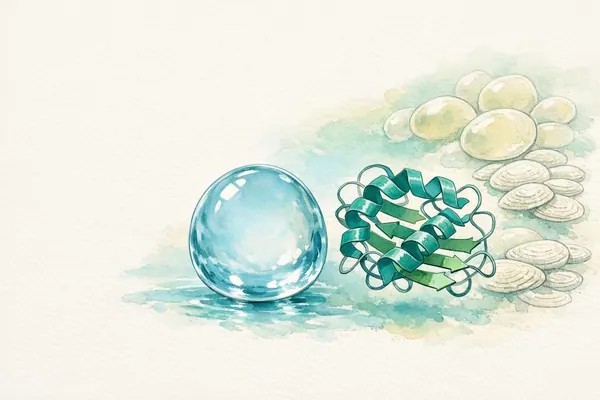
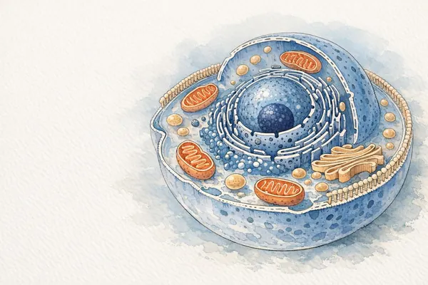
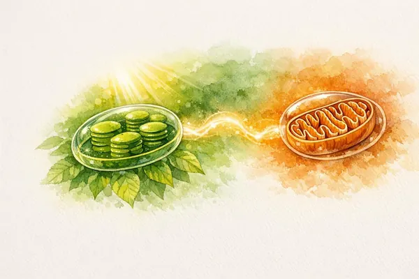
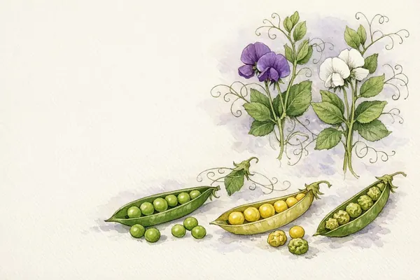
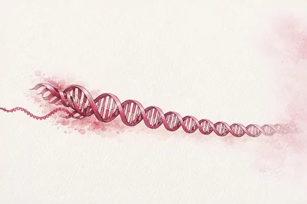
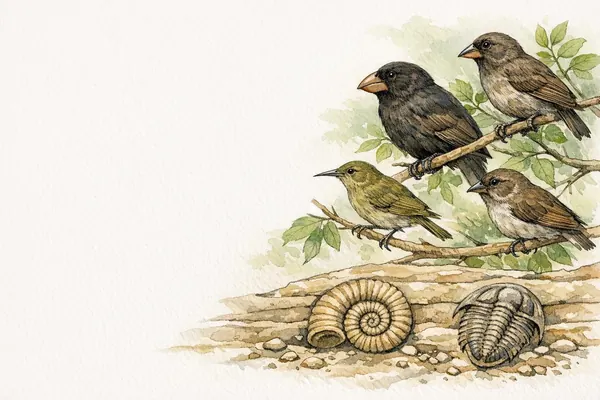
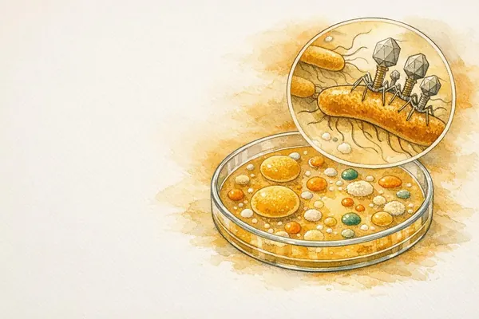
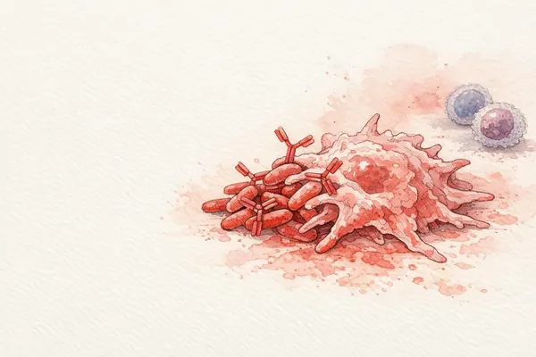
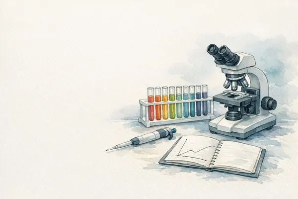

1Tema 1 · Les molècules de la vidaBiomolècules- ·Què entra a la PAU
- 1.1Aigua i sals minerals
- 1.2Glúcids
- 1.3Lípids
- 1.4Proteïnes i l’enllaç peptídic
- 1.5Enzims
- 1.6Àcids nucleics: estructura
- 1.7Mapa del tema
- ·Errors típics a la PAU
- ·Autoavaluació

2Tema 2 · Les molècules de la vidaLa cèl·lula- ·Què entra a la PAU
- 2.1Teoria cel·lular i microscòpia
- 2.2Procariotes i eucariotes
- 2.3La membrana: mosaic fluid
- 2.4Transport i osmosi
- 2.5Orgànuls
- 2.6Cicle cel·lular
- 2.7Mitosi
- 2.8Meiosi
- 2.9Mapa del tema
- ·Errors típics a la PAU
- ·Autoavaluació

3Tema 3 · Les molècules de la vidaMetabolisme- ·Què entra a la PAU
- 3.1Visió general
- 3.2Glucòlisi
- 3.3Destí del piruvat i cicle de Krebs
- 3.4Cadena respiratòria i balanç d’ATP
- 3.5Fermentacions
- 3.6β-oxidació
- 3.7Anabolisme heteròtrof
- 3.8Fotosíntesi
- 3.9Quimiosíntesi i fotosíntesi bacteriana
- 3.10Mapa del tema
- ·Errors típics a la PAU
- ·Autoavaluació

4Tema 4 · Genètica i evolucióGenètica mendeliana- ·Què entra a la PAU
- 4.1Conceptes i lleis de Mendel
- 4.2Monohibridisme
- 4.3Dihibridisme i lligament
- 4.4Herència lligada al sexe
- 4.5Pedigrís i probabilitat
- 4.6Caràcters quantitatius
- 4.7Mapa del tema
- ·Errors típics a la PAU
- ·Autoavaluació

5Tema 5 · Genètica i evolucióGenètica molecular i biotecnologia- ·Què entra a la PAU
- 5.1Dogma i genomes
- 5.2Replicació
- 5.3Transcripció i codi genètic
- 5.4Traducció
- 5.5Regulació i diferenciació
- 5.6Mutacions i càncer
- 5.7Enginyeria genètica
- 5.8PCR, CRISPR, OMG i clonació
- 5.9Aplicacions i teràpia gènica
- 5.10Mapa del tema
- ·Errors típics a la PAU
- ·Autoavaluació

6Tema 6 · Genètica i evolucióEvolució- ·Què entra a la PAU
- 6.1L’evolució és un fet
- 6.2Lamarck, Darwin i la teoria sintètica
- 6.3Hardy-Weinberg i les forces evolutives
- 6.4Variabilitat: mutació i recombinació
- 6.5Especiació
- 6.6Perspectives actuals
- 6.7Mapa del tema
- ·Errors típics a la PAU
- ·Autoavaluació

7Tema 7 · Microorganismes i salutMicrobiologia- ·Què entra a la PAU
- 7.1Bacteris i arqueus
- 7.2Mida, Gram, cultiu i esterilització
- 7.3Metabolisme, simbiosi i cicles
- 7.4Microbiota, malaltia i indústria
- 7.5Transferència horitzontal i antibiòtics
- 7.6Virus: estructura i cicles
- 7.7Viroides, prions i fongs
- 7.8Mapa del tema
- ·Errors típics a la PAU
- ·Autoavaluació

8Tema 8 · Microorganismes i salutImmunologia- ·Què entra a la PAU
- 8.1Immunitat i barreres
- 8.2Immunitat innata i complement
- 8.3Immunitat específica
- 8.4Anticossos i respostes
- 8.5Immunitat artificial: vacunes i sèrums
- 8.6Alteracions i VIH
- 8.7Fases de la malaltia infecciosa
- 8.8Mapa del tema
- ·Errors típics a la PAU
- ·Autoavaluació

9Tema 9 · Mètode científicDisseny experimental- ·Què entra a la PAU
- 9.1El mètode en una pregunta de PAU
- 9.2Variables, control i rèpliques
- 9.3Gràfics, taules i errades
- ·Errors típics a la PAU
- ·Autoavaluació